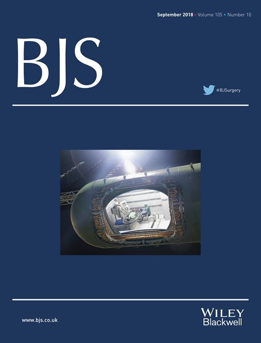

space medicine
Pre-COVID, I became interested in this niche corner of medicine — what surgical and neurosurgical care would need to look like on long-duration missions beyond Earth, where evacuation isn't an option and mission planners have to think adaptively about physiology, trauma, and self-sufficient care. A few publications came out of it, gathered here. I was even invited to contribute my opinions on the topic to Scientific American.
-
Surgery in Space: Medicine's Final Frontier
Invited op-ed distilling the BJS review for a general-science audience: astronauts on long-duration flights will need more than routine care, and the piece walks through how microgravity and radiation reshape the cardiovascular, skeletal, and immune systems — and what robotic surgery, 3-D printing, and machine learning could do about it.
-
Surgery in space
A literature review of the medical challenges of long-distance space travel: fluid redistribution, cardiovascular deconditioning, bone and muscle atrophy, and radiation exposure, alongside the trauma and common surgical conditions (e.g. appendicitis) a crew could face too far from Earth for evacuation or telemedicine. Argues for self-sufficient, adaptive surgical technology as the only realistic answer.
-
Neurosurgery and Manned Spaceflight
A neurosurgery-focused follow-up examining CNS and ophthalmologic effects of long-duration microgravity exposure — including intracranial pressure changes associated with Spaceflight Associated Neuro-ocular Syndrome (SANS) — and what that means for neurosurgical risk, diagnosis, and treatment on future deep-space missions.
-
In Reply: Neurosurgery and Manned Spaceflight
Our reply to a letter to the editor responding to the piece above — engaging further with readers' questions on the neurosurgical implications of manned spaceflight.